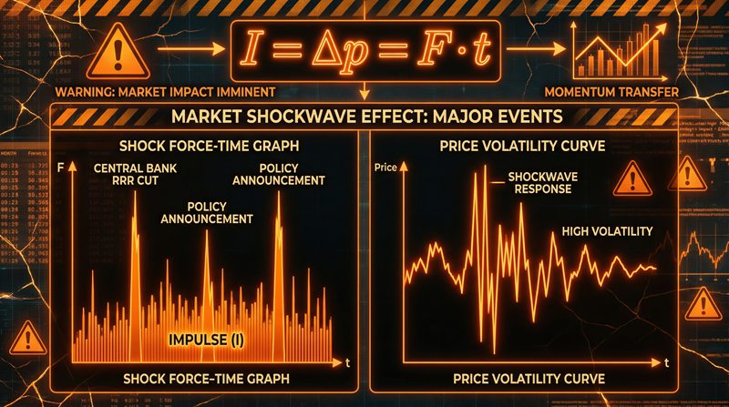

返回课程列表
第四课
动力学
市场力量的动力学分析与趋势驱动
⏱️ 约55分钟
动力学研究力与运动的关系，是理论力学的核心。在金融市场中，价格的运动也是由各种"力"驱动的： 基本面因素、资金流向、市场情绪等。理解这些力量如何影响价格，是投资成功的关键。
牛顿运动定律
牛顿三定律是动力学的基础。第一定律（惯性定律）说明物体保持原有运动状态的特性； 第二定律（F=ma）揭示了力与加速度的关系；第三定律说明作用力与反作用力。
市场运动的「牛顿三定律」
牛顿定律可以类比到金融市场：
- 惯性定律：趋势具有惯性，上涨中的股票倾向于继续上涨，直到有外力改变
- F=ma：市场力量F产生价格加速度a，大资金流入产生大的价格变动
- 作用力与反作用力：买入力量和卖出力量相互对抗，决定价格方向
- 质量概念：大盘股的"质量"大，需要更大的资金才能推动（惯性大）
动量定理与资金流向
动量定理指出，物体动量的变化等于作用力的冲量。在金融中，资金的持续流入（冲量） 会改变市场的"动量"，推动价格向某个方向运动。

资金流向的「动量分析」
动量指标是技术分析的重要工具：
- 动量指标MOM：当前价格与N日前价格的差值，反映价格变化速度
- 资金流向：持续的资金流入产生价格动量，就像持续的力产生加速度
- 动量守恒：在没有新资金进入时，市场动量会逐渐衰减（摩擦损耗）
- 动量反转：当动量达到极值时，往往预示趋势即将反转
能量守恒与价值投资
机械能守恒定律说明，在只有保守力做功的情况下，动能和势能可以相互转化，但总和保持不变。 在投资中，风险和收益也可以看作是可以相互转化的"能量"。
投资中的「能量守恒」
价值投资理念与能量守恒有相似之处：
- 风险势能：低估值股票具有"势能"，就像高处的物体具有重力势能
- 收益动能：价格上涨释放"动能"，但会消耗未来的上涨空间
- 价值回归：价格围绕价值波动，就像振动围绕平衡位置
- 安全边际：买入时保留足够的"势能"空间，降低风险